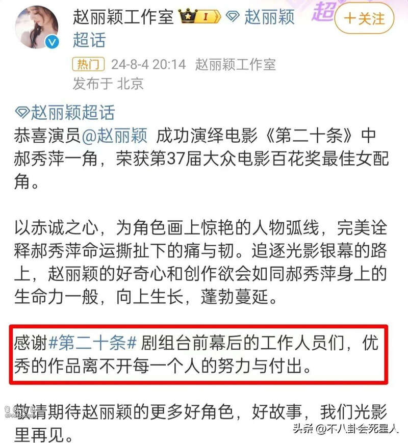
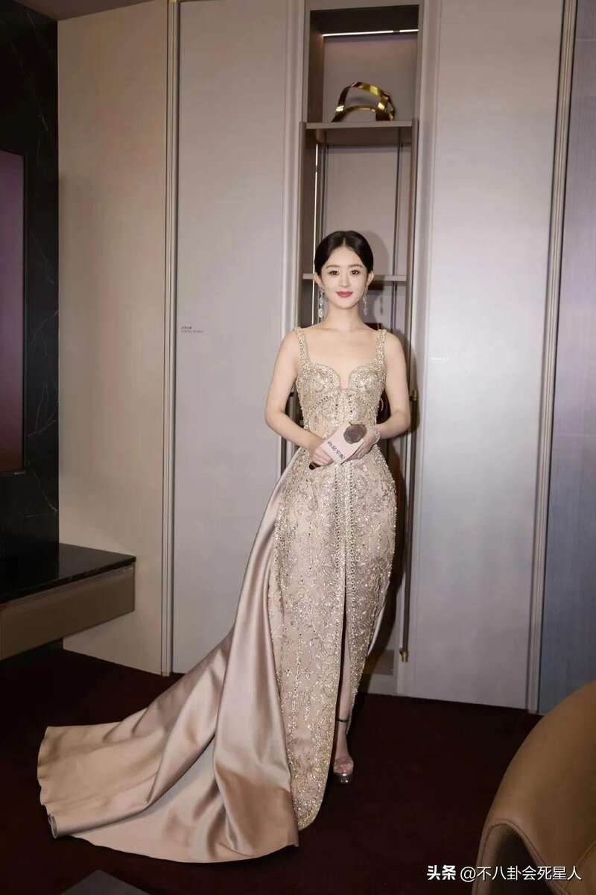
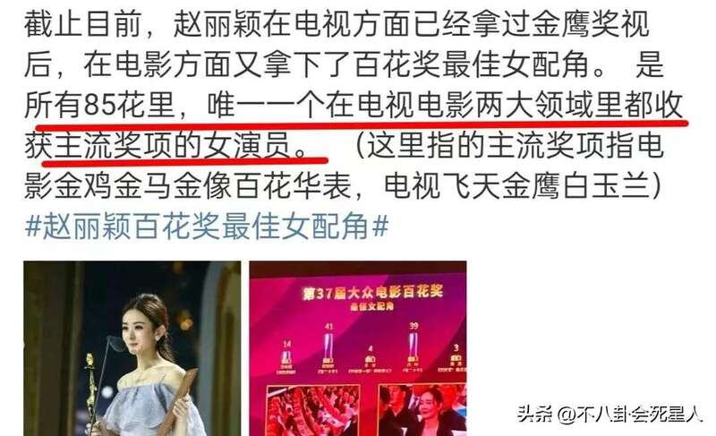

8月4日晚，第37届大众电影百花奖在成都举行，这一夜星光熠熠，多位明星来到现场见证荣誉的颁发。赵丽颖通过《第二十条》的郝秀萍，击败高叶、袁泉等入围的明星，获得百花奖最佳女配角。
颁奖典礼当晚，赵丽颖因在剧组拍戏，未能没有出席活动，便委托出品人王长田上台发言，但她获奖的消息很快就登上了热搜第一，引发关注和讨论。
之后，赵丽颖晒出获奖证书和奖杯，发文称感谢观众的喜爱和支持，观众的支持是最大的流量，这是一个“好”开始。一句话一语双关，不仅是对郝秀萍的肯定，有了好的开始，也是对演员赵丽颖来说有了好的开始。
看到赵丽颖获奖，评论区几乎一致，都在说她实至名归，值得这个奖项。
实话实说，赵丽颖一路走来，她的努力和进步观众都看在眼里。电影里的郝秀萍是个听障人士，赵丽颖为了贴合角色，不光素颜出镜毫无偶像包袱，还在开拍前和听障家庭共同生活，只为离角色更近。
电影开拍时，赵丽颖经常在片场一个人安静地待着不说话，一直在找人物状态，杀青接受采访时，她会下意识有手部动作，言行举止都为了贴合角色。
事实证明，赵丽颖的努力没有白费，她用实力给大家带来了鲜活的郝秀萍。工作室回应获奖的言论显得很有格局，感谢了台前幕后的每个工作人员。

值得注意的是，85花里共有两个女星拿到百花奖，除了赵丽颖就是杨颖，不过杨颖当时拿奖争议很大，备受质疑，但赵丽颖得奖几乎没有异议。

另外，赵丽颖之前在电视剧方面获得过金鹰视后，现在又在电影方面拿到百花奖，她是唯一一个在电影电视剧方面都有主流奖项的85花，实力和地位不容小觑。

众所周知，杨幂出道多年，一直是85花的“领头羊”，她和赵丽颖经常被人议论，如今赵丽颖的获奖，意味着她和杨幂的差距越来越大。
赵丽颖跑了7年的龙套，才能演上主角，她一路稳扎稳打，不断磨炼演技，作品不断带给观众惊喜，早期有《花千骨》《楚乔传》等爆剧，后面有《风吹半夏》《幸福到万家》等口碑剧。
如今《第二十条》里的郝秀萍，赵丽颖突破自我，为她打开电影市场作了铺垫。在赵丽颖身上，最大的特点就是真诚，她是可以为了角色不计形象，敢拼敢吃苦的人。
再看杨幂，其实早些年的杨幂，堪称“爆剧制造机”，她出演的《仙剑三》《宫》《三生三世十里桃花》都火遍大江南北，演起古偶游刃有余，人气和地位在85花里遥遥领先。
从杨幂的获奖经历而言，她拿的基本上都是人气奖，在演技方面还需要多多努力。近些年来，杨幂的演技质疑声越来越多，她的作品经常备受争议。
就拿2024年来说，她一连“扑”了3部戏，《哈尔滨一九四四》里，杨幂瘪嘴明显，她说话的时候喜欢抿唇，小动作太多被指出戏。
《狐妖小红娘》里杨幂的表现也令人失望，原本以为古偶是她的舒适区，但杨幂在这部剧里一脸疲态，演技也不灵动。《没有一顿火锅解决不了的事》票房惨淡、口碑崩塌，杨幂的表演也没有特别让人惊喜的地方。
杨幂在这3部新作品里的表现，质疑声大过赞美声，有观众评价说她出道多年，归来仍是新人演技。
以前，杨幂各方面都是85花里拔尖的，但赵丽颖后来居上，让观众看到了她的进步。无论是国民度还是演技观众缘，赵丽颖现在都是85花里的佼佼者了，85花的咖位或许已经悄悄改写。
都说演员靠作品说话，杨幂和赵丽颖的现状形成鲜明对比，赵丽颖的演技不断向上，杨幂却有点不增反减的意思，她还需要在演技方面苦下功夫，用心钻研。